Mersin’de Ne Yapmalı? Nerede ve Ne Yemeli?
Mersin’e yaptığımız seyahat ve kısa tatilin ardından gözlem ve tecrübelerimi sizlerle paylaşacağım.
Öncelikle Mersin’in tarihi ve turistik bölgelerini ziyaret etme amacında iseniz Narlıkuyu bölgesinde konaklamanızı tavsiye ederim, zira burası birçok tarihi mekanın hemen yanı başında yer alıyor.
Bölgede konaklanabilecek çok sayıda otel yer alıyor, biz Tolya Hotel adlı butik otelde konakladık, otel gayet temiz idi fakat biraz eski bir oteldi, yine de oteli beğendik, kış dönemi olduğu için kişi başı sabah kahvaltı dahil 25 TL’ye konakladık. Otel klima ile ısındığı için biraz da üşüdük, geceleri 14 derece, gündüzleri ise 26 derece hava sıcaklığı vardı Şubat ayında. Otel denizin hemen yanı başında yer alıyordu.
2 günlük mini tatilimiz boyunca gezdiğimiz yerler:
- Astım Mağarası: Turistik bir tesisin kapısına park ettik, mağarayı ararken öğrendik ki mağaraya tesisin içerisinden dönen metal bir merdivenle iniliyormuş, kişi başı 3 TL ödeyip, metrelerce derine indik (sanırım 80 basamak indik). Mağara müthiş sarkıtlarla dolu, sıcak ve rutubetli bir mağara idi, sauna gibi terletti bizi.
- Cennet – Cehennem Mağarası: Astım mağarasının çok yakınında yer alan bir bölge burası. Kocaman bir çöküntünün bir tarafına cennet bir tarafına da cehennem deniliyor, geniş zaman ayırıp gezmek gerekiyor, çok enteresan bir yer burası. Bölgede devede fotoğraf çektirebilir, alışveriş yapabilir, tantuni vb yiyebilirsiniz.
- Narlıkuyu Mozaik Müzesi: Narlıkuyu merkezinde yer alan bu müzede yüzlerce mozaik bulmayı beklemeyin, sadece bir tane yer döşemesi mozaik burada yer alıyor, müze mozaiği taşımamak için mozaiğin üzerine yapılmış, mozaik son derece korunmuş ve sanatsal motiflere sahipti. Müzeyi gezmenin ücretsiz olduğunu belirtelim.
- Kız Kalesi: Narlıkuyu – Erdemli karayolunun hemen yanı başında yer alan bu kalenin bir parçası karada bir parçası da sahile çok yakın bir adada yer alıyor, kumsalı incecik kumlardan ve palmiyelerden oluşan bu sahil fotoğraf çekmek harika bir mekan, kaleyi gezmek için vakit yoktu bu nedenle detay yazamıyorum ama görmek gerek.
- Elaiussa Antik Kenti:Narlıkuyu – Erdemli karayolunun üzerinde yer alan bu antik kent, iki parçadan oluşuyor, bir parçasında mozaik döşemeli zeminler yer alırken diğer parçasında ise antik bir tiyatro yer alıyor. Bahçesinde portakal ağaçları yer alan bu antik kent görülmeye değer.
- Silifke Kalesi: Silifke ilçesi merkezinde yer alan kale, hakim, yüksek bir tepeye inşa edilmiş ve Silifke’nin tamamını kuş bakışı görebiliyor.
- Adam Kayalar: Buraya kadar anlattığım tüm yerler ana yol kenarında yer alıyor, fakat Adam Kayalar için ana yoldan sapıp 15 km yol almanız gerekiyor, ayrıca yolun tamamı asfalt değil, üstelik bu da yetmiyor, sarp kayalardan vadinin tabanına kadar yürümeniz gerekiyor, vadi zemininden görülen bu kaya oymaları oldukça etkileyiciydiler.
- Portakal Bahçeleri: Mersin’e gitmişken özellikle Silifke bölgesindeki portakal bahçelerini görmelisiniz.
- Akçakıl Koyu: Silifke – Anamur kara yolu üzerinde Taşucu’nu geçtikten sonra Akçakıl tabelasını görünce sola giriyorsunuz, beyaz büyük taşlarla döşeli turkuvaz mavisi dingin suyuyla bu koy insanın aklını başından alıyor. Gün doğumunu seyretmenin keyifli olacağını tahmin ediyorum. Burada kamp yapmak ve restoranda balık da yemek mümkün.
Ne yedik? Ne yenilmeli?
- Yaprak Tantuni: Erdemli ve Mersin’de şubeleri var, tantunisi güzeldi, tavsiye ederim.
- Ciğerci Apo: Mersin merkezde, forum yakınında yer alıyor ve ciğeri harika, 10 şiş ciğer veriyorlar, yanında her türlü mezesi var.
- Dondurmacı Halil: Ciğerci Apo’nun tam karşısında yer alıyor, cezeryesi meşhur, fıstıklı veya fındıklı cezerye alabilirsiniz, ayrıca Mersin’e has kerebiç tatlısını da en iyi burası yapıyormuş, gitmişken onun da tadına bakabilirsiniz. Hediyelik cezerye için doğru adres burası.
Gidemedik ama bir dahaki sefere buralara gideceğim:
- El-Ruha Kebap
- Özkan Tantuni
- Limonlu Çayı
https://mapsengine.google.com/map/edit?mid=zX4dq4izcmZ0.kQpD2aYT1H5U
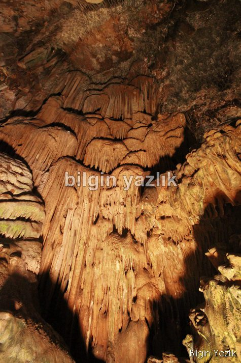
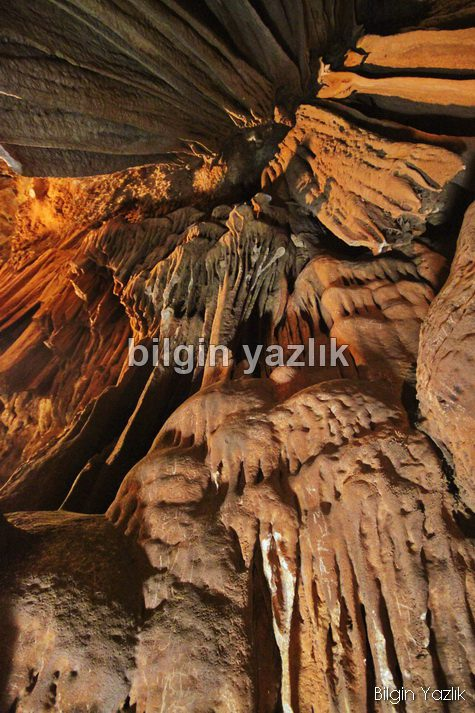
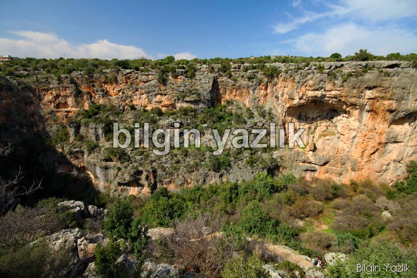
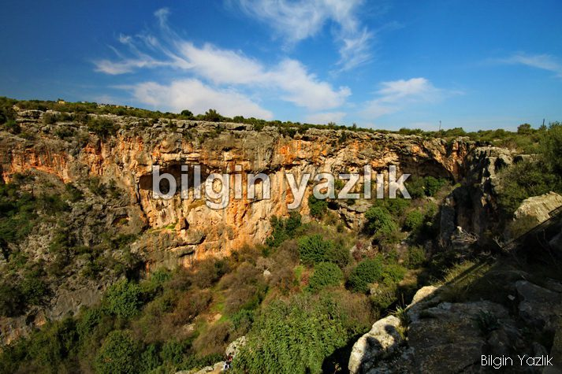
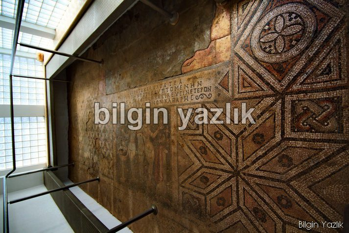
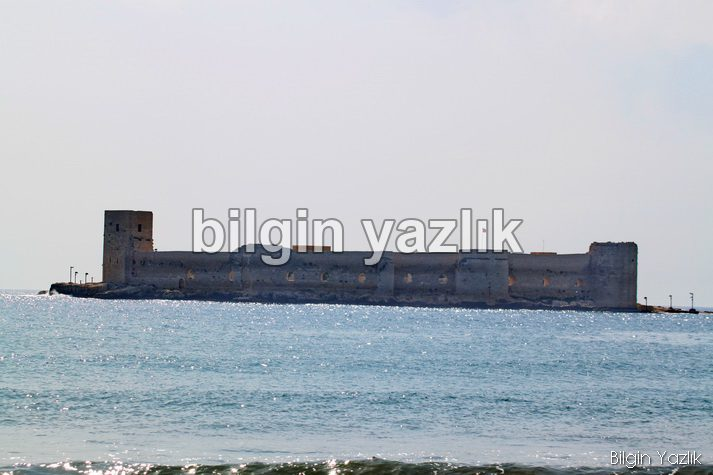
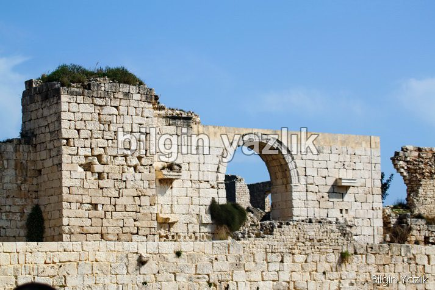
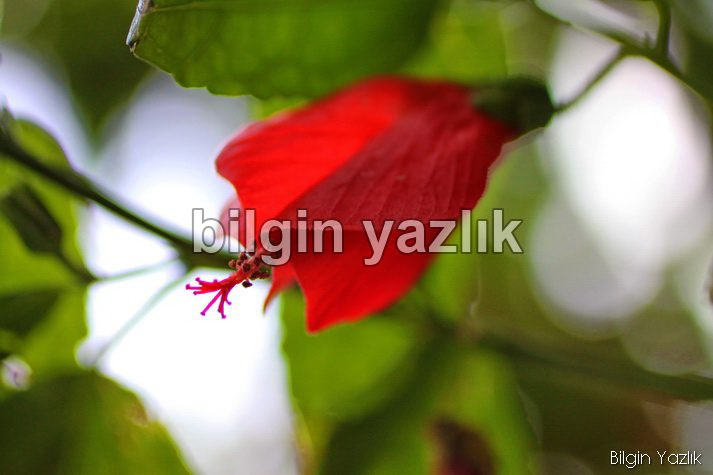
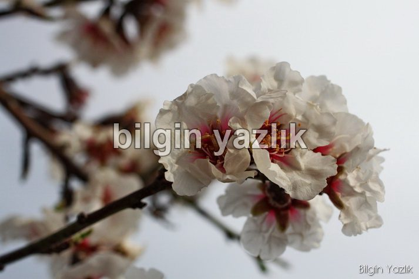
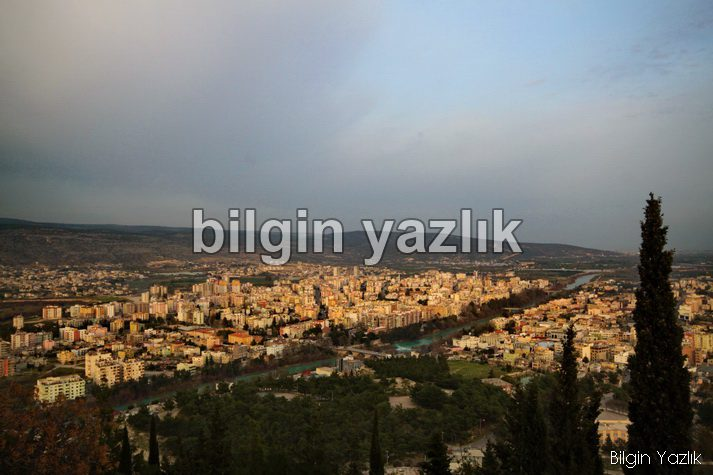
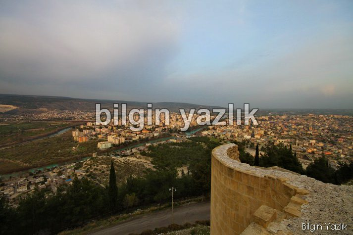
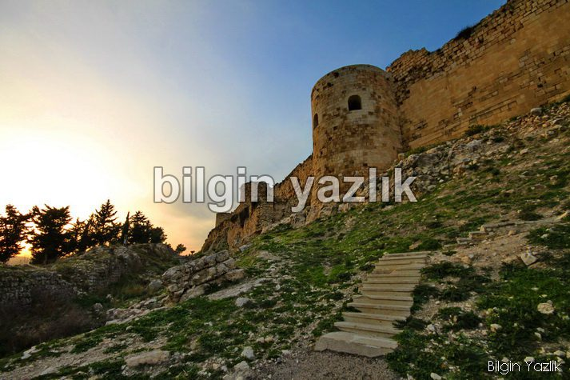
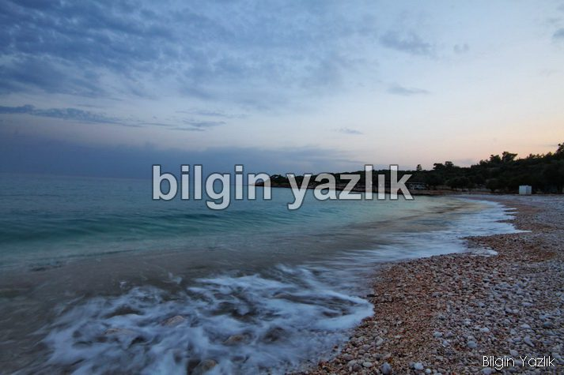
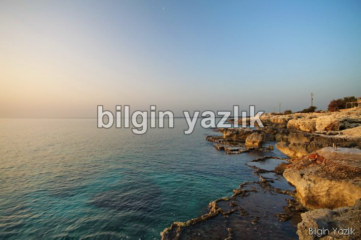
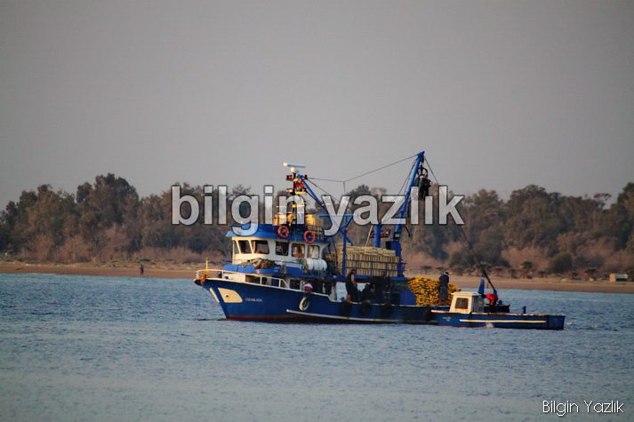
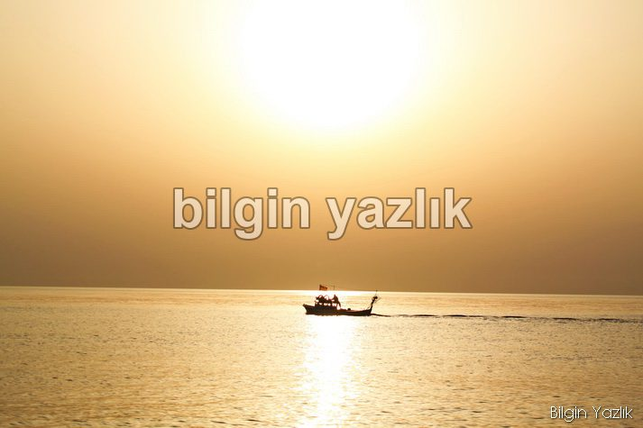
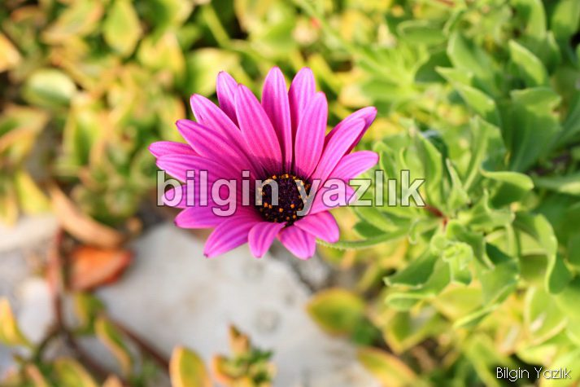
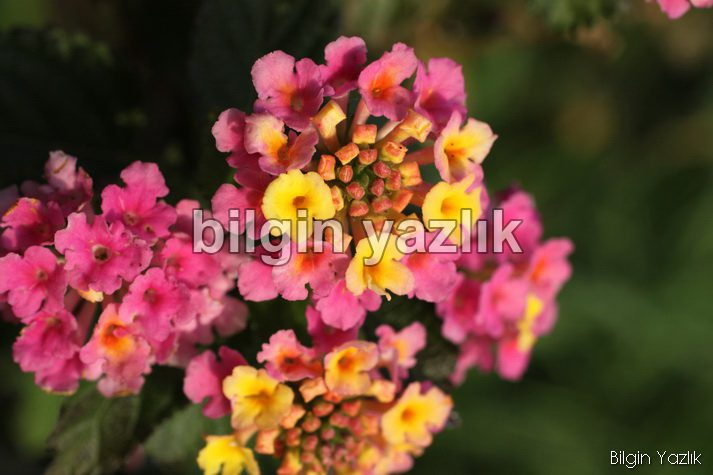
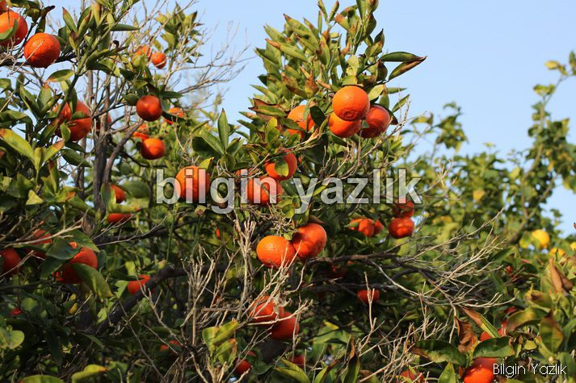
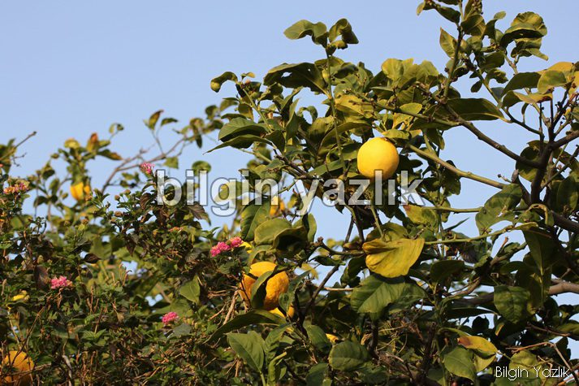
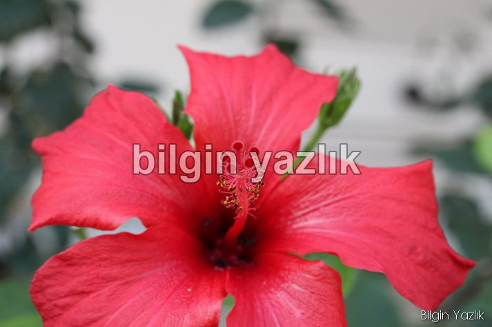
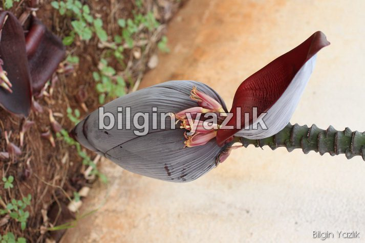
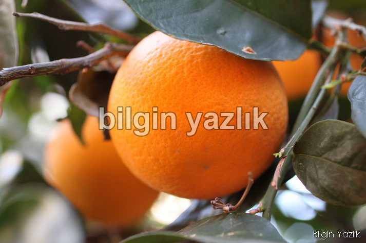
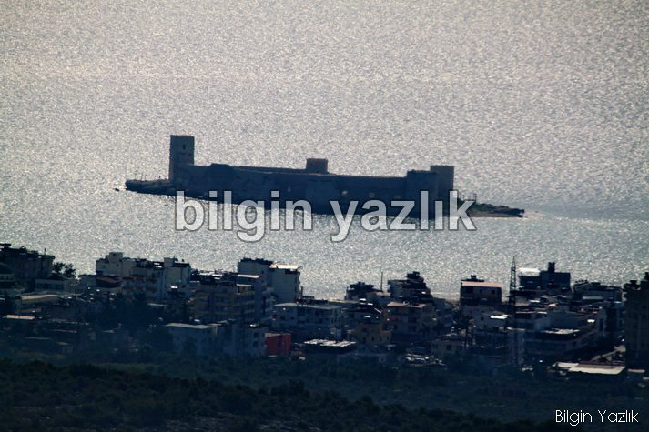
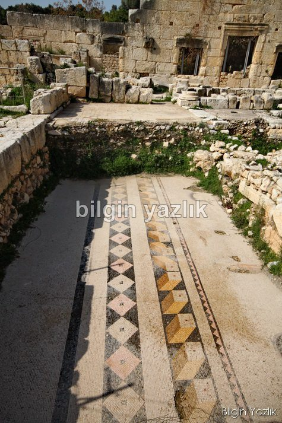
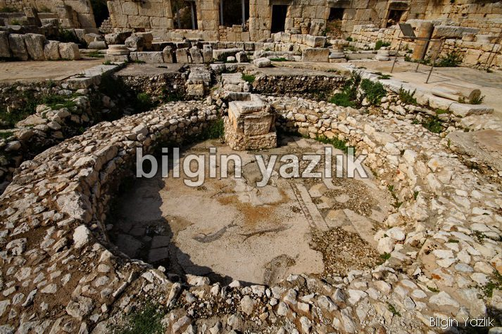
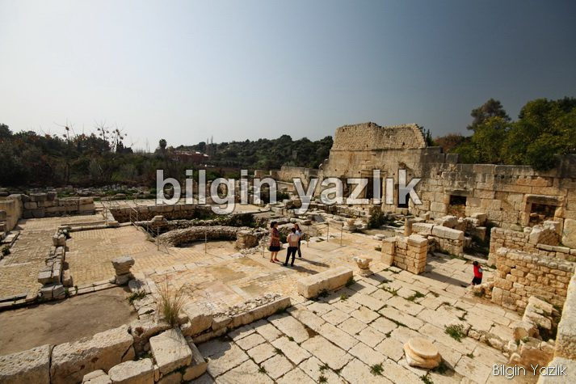
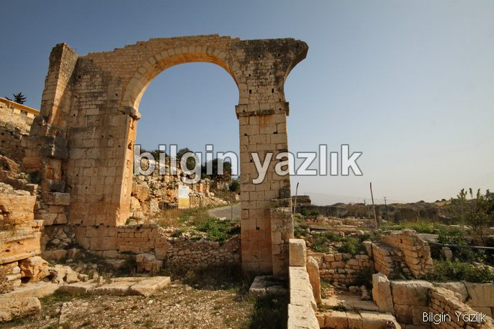
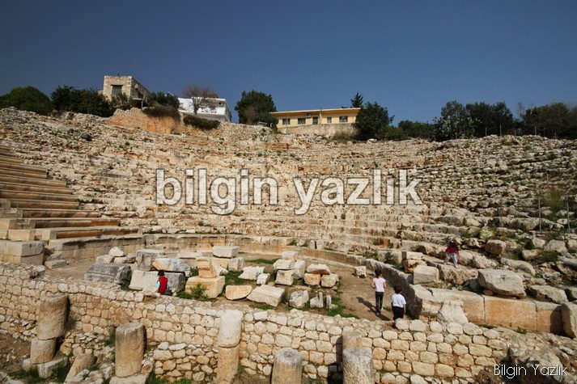
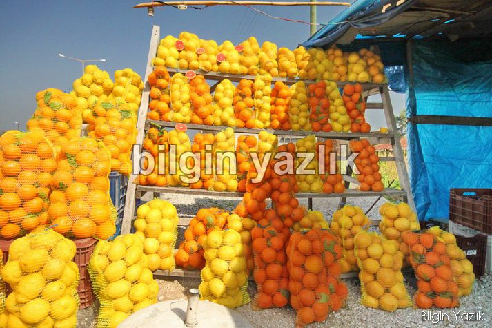
Bu yazı taliyol arşivinden taşınmıştır. · özgün kayıt